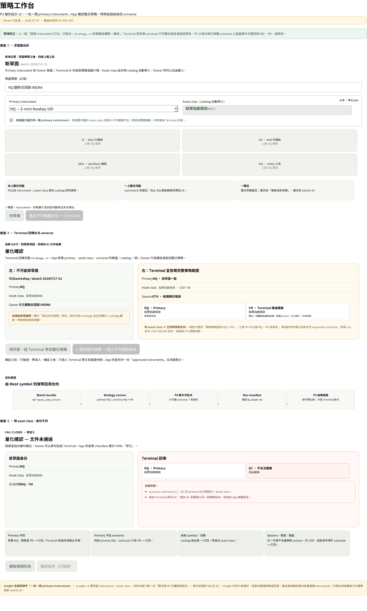

D bias 大框架
上載拖放或揀 D 圖截圖
ema18ema90ema50vwapatr14
打字D 圖判斷（必填）
Owner 逐項拍板嘅四分頁設計。呢份係實作依據，取代之前散落嘅三個修訂稿；2026-07-27 加入 primary instrument 閉環補充。
定稿 2026-07-25 · Instrument 補充 2026-07-27 · chart_source: screenshot · 側欄「工房」取消，內容併入本頁
futures-ui-02/03/04 三個稿。嗰三個係傾嘅過程，有互相矛盾嘅版本，唔准用。所有拍板決定集中喺最後一節「實作約束」——mockup 表達唔到嘅嘢全部喺嗰度。data\sketches\[]，同「未填」係兩個唔同訊號。已寫入：20-algo-trading-2\data\sketches\workshop\sketch-20260725-01\ ├ chart-d.png / chart-1h.png / chart-30m.png / chart-5m.png ├ meta.yaml ← 四格文字＋指標＋角色，機器讀 └ INSTRUCTIONS.md ← 俾 AI 嘅指令書（自動生成、自包含、六段式） [⬇ 下載圖文包] [⧉ 複製 terminal 開場白] [開資料夾] [去分頁 ② 等匯入] 「下載圖文包」＝ 六個檔真係落你部電腦（Downloads）， 你自己搬去 20-algo-trading-2\data\sketches\workshop\ 就可以去 terminal。 純前端做得到，唔使後端 —— 所以階段 B 就試得到成條流程。
data/sketches/…）——因為 terminal AI 嘅 cwd 就係 project folder。data\sketches\workshop\sketch-20260725-01\strategy.yaml 讀入0 成交 ≠ AI 理解錯。呢次係喺 1H 中層截住： · mid_direction 7 次 —— 1H 方向同 Daily 方向唔一致 · mid_pullback 1 次 —— 回踩未夠資格 策略邏輯運作正常，係呢 20 日市況唔配合。 如果連 Daily 閘都係 0 日 → 可能 AI 把 regime 寫得太嚴， 或者揀嘅範圍冇趨勢日。兩者都值得返 terminal 講一句。
kind: insight，AI 返 insight.v1（量化條件 ＋ 建議參數 ＋ 量度方法）。✗ 冇「用呢個洞察跑回測」 ✗ 冇「匯出洞察做 AI context」 ✗ 冇連去策略版本庫嘅路徑 ✗ 狀態唔會自動變（手動改，目前冇統計驗證） 洞察而家係一本筆記本：入得、睇得、刪得，僅此而已。 將來想用（餵返俾 AI／統計驗證／升級成積木）再傾。
strategy.v1，唔准用 checkbox 改寫策略。完整 draft／合法返程／非法返程畫面見下圖；
如圖中示意同本檔最後嘅實作約束有差異，以約束 #28–#35 為準。

| # | 約束 | 理由／來源 |
|---|---|---|
| 1 | 側欄「工房」取消，內容併入策略工作台 | Owner 心智模型：畫圖同確認係同一件事嘅開始同結束 |
| 2 | 四張圖同時並排，唔准做成單圖＋TF 切換 | 策略係多時間框架，切換就斷咗對照。結果頁而家做成單圖＋tabs 係偏離規格 |
| 3 | chart_source: screenshot——Owner 自己上載 | Owner 拍板。代價係冇機讀 drawings 座標，接受 |
| 4 | 修訂 2026-07-26（Owner 拍板方案 A）：草圖身份係 origin + sketch_id；repo 路徑 data/sketches/<origin>/<sketch-id>/。本 app 產生嘅 origin 係 workshop；同名 journal-app 包可共存 | /data/ 已 gitignore；terminal AI 嘅 cwd 就係 project folder。複合身份避免兩個獨立 app 同日流水號撞包 |
| 5 | 修訂 2026-07-25（Owner 拍板）：草圖標題未填 或 四格文字未填齊 → 匯出掣 disabled。提示要逐項講明差咩（「標題未填」／「30m、5m 兩格未填」），唔准只寫一句籠統。 🔴 「存草稿」仍然零前置條件——閂住嘅只係匯出，唔係儲存。 🔴 標題閂咗之後， meta.yaml 唔准再用草圖編號做 fallback 標題，直接寫 Owner 打嘅字 |
owner_view 係最核心欄位，缺一格都應該擋住匯出。標題點解都要閂：`docs/05` §3.5 一直寫住 title 必填——人類識別，係本設計稿漏咗閂，所以出現過「meta.yaml 自動填編號做標題、INSTRUCTIONS.md 寫（未填）」嘅矛盾（[106] D2）。Owner 2026-07-25 拍板：一個冇名嘅草圖三個月後自己都認唔返 |
| 6 | indicators_shown 必填，剔完冇寫 [] | []＝明確冇剔；缺席＝未知。兩個唔同訊號 |
| 7 | 匯出用 Dialog 唔用 toast，內含可一撳複製嘅 terminal 開場白 | Owner 要複製嘢；而且開場白把「唔准估」帶出 app 外 |
| 8 | INSTRUCTIONS.md 必須自包含，唔准引用 repo 文件 | 收件 agent 冇 repo 訪問權。要有測試斷言全文唔出現 docs/0X 引用 |
| 9 | 分頁 ② 左邊由分頁 ① 帶入，唔係由 AI 檔案讀出 | 對照嘅意義係「我講嘅」vs「AI 聽到嘅」 |
| 10 | 參數樹用通用 YAML 渲染，唔硬寫欄位 | 硬寫＝偷偷持有一份會過時嘅 schema 快照 |
| 11 | unquantified_notes 永不可摺，0 項要顯示「0 項」 | 鐵閘。「AI 聲明冇假設」同「AI 冇聲明」係兩件事 |
| 12 | 試跑預覽 唔自動跑；唔存 artifact、唔佔 run 編號 | 慢 10 秒；而且 dry-run 唔應該污染結果庫 |
| 13 | 預覽必須畫漏斗＋系統解讀，唔止畫成交 | 0 成交好常見；冇解讀 Owner 會以為壞咗 |
| 14 | 漏斗兩組單位分開比例尺、各自標單位 | 日級 vs 5m 評估級唔可以擺埋同一把尺 |
| 15 | 撳「確認採用」之前零寫入（要有測試證明，唔係靠 UI 冇掣） | 未同意嘅嘢唔應該存在於系統 |
| 16 | 版本列表冇「改參數」掣；要「過目」→「✎ 編輯參數」兩步 | Owner：唔好直接就咁改，scroll 時手指擦到就改咗 |
| 17 | UI 只准改數值；structures／入市序列唯讀 | 改到咁深等於重寫策略，應返 terminal |
| 18 | 改參數 生成新版本，唔改原版本；來源標「Owner UI 微調」 | D9 修訂：保住「每個 run 追溯得返用咩參數」 |
| 19 | 刪除：有 standard run 引用就唔准；validation run 唔算 | Owner 拍板。validation run 係工程驗證唔係決策記錄 |
| 20 | 刪除＝歸檔去 data/strategies/_deleted/<id>.yaml（YAML 原文＋刪除時戳＋當時狀態） | Owner：要 terminal AI 之後搵得返當時數據。目標檔已存在唔准靜靜覆蓋 |
| 21 | 刪除 UI：單撳即刪 → 該行轉「已刪除 · 復原」約 5 秒 → 真寫入 | Owner 揀最輕阻力。離開頁面／refresh ＝ 當確認；復原期間要真延遲寫入 |
| 22 | 洞察純記錄：唔連策略、唔連回測、狀態手動改 | Owner：目前純記錄，遲啲再諗點用 |
| 23 | 策略文件永遠自包含，執行層永不運行時查洞察庫 | 否則改一個洞察，十個策略行為靜靜哋變 |
| 24 | 主題切換器唔准 overlay 喺任何內容之上 | Owner 截圖顯示佢壓住「確認時間」個值。三主題三頁寬都要檢查 |
| 25 | 時間顯示分三類：時刻可轉本地時區＋必須標時區；交易日絕對唔准轉；範圍輸入用本地 picker 但同時顯示 UTC 對照 | 把 trading date 當時刻轉時區＝重犯 3b-1 嗰個 -2 日 offset。要有測試：trading date 喺兩個 TZ 下輸出同一日子 |
| 26 | 新增 2026-07-25（Owner 拍板）：匯出 Dialog 要有「⬇ 下載圖文包」——六個檔（四張圖 ＋ meta.yaml ＋ INSTRUCTIONS.md）真係落 Owner 部電腦。🔴 純前端做，唔准為咗佢寫任何後端。 🔴 下載出嚟嘅內容 ＝ 畫面顯示嗰個包，唔准兩份唔同。 🔴 Dialog 要一句講明落咗去邊、之後要搬去邊 |
Owner 目標係「成個流程通先」，但「階段 B 唔碰後端」令匯出→terminal→匯入呢條交接成個階段 B 都試唔到，要等階段 C。而呢條交接正正係整個設計最易出錯嘅位。瀏覽器下載解開咗呢個死結：唔碰後端，但 Owner 而家就行得完成條路 |
| 27 | 新增 2026-07-25（Owner 拍板）：分頁 ① 要有草稿列表，撳一行就揀返去繼續填。每行顯示編號 · 狀態（草稿／已匯出）· 差咩（例如「30m、5m 兩格未填」）。而家開緊嗰個要標出嚟 | 冇呢個，「存草稿」只得返一半價值——離開再返嚟開得返最後嗰個，但一撳「新草圖」就永遠返唔到轉頭。草稿資料本來就已經存住，只係之前冇畫面讀佢 |
| 28 | 新增 2026-07-27（Owner 拍板）：MVP 每個草圖包只對應一個 instrument；由 Owner 明確選擇，唔准由標題、圖片、檔名或 Terminal 推斷。asset_class、顯示名稱、幣別、可用 session 由 canonical contract catalog 帶入，Owner 唔自由輸入 |
Instrument 係 Owner 意圖同跨頁身份起點；分類若由前後端各自硬寫，NQ／GC 之類邊界會漂移 |
| 29 | 未上載任何圖可以改 instrument；一上載任何圖就鎖 instrument/class；一匯出就鎖整份草圖。要改只可複製成新 sketch id。舊未匯出 draft 缺欄要補揀；舊已匯出 package 缺欄只讀，唔准原地補寫 | 防止 NQ 圖被靜靜改標成 GC；保持 artifact 不可變同 legacy bytes 誠實 |
| 30 | 新 sketch.v1 必須同時寫 instrument＋asset_class；browser ZIP 同 repo package 使用同一份 validated metadata source。Screenshot 本身無法證明 instrument，MVP 唔做 OCR、唔假裝驗圖 |
可驗證嘅保證係 Owner 選擇＋鎖定；圖像語義仍屬人類責任 |
| 31 | Terminal 回傳嘅 strategy.v1.universe 必須自包含 primary_instrument、asset_class、contracts、expansion_rationale、session。Primary-only 亦要寫空 mapping；每個新增 member 恰好有一段非空理由 |
策略原文係結構唯一真相；三個月後仍要知道點解 YM 被加入 NQ 策略 |
| 32 | 分頁 ② universe 全部唯讀；唔准有 per-instrument checkbox 或另存 approved_instruments。Owner 只可「確認整份策略」或「返 Terminal 修改整份策略」；確認前 import/confirm 零寫入 |
App 勾走一個 member 就係靜靜改策略結構，會令 Terminal 原文、版本同 run 範圍出現雙重真相 |
| 33 | Validator 要 fail-closed 檢查：primary 在 contracts、所有 symbol 已知、全 universe 同 asset class、class 同 catalog 一致、所有 member 支援 session、MVP 全部 USD、rationale keys 恰好完整；本機有原草圖時 primary/class 亦要 exact match。任一失敗確認 disabled、零寫入，唔准 App 幫 YAML 修正 | 同 asset class 只係可測假設，唔係成功證據；未知分類、跨類、未有 FX conversion 都唔可以靠估 |
| 34 | 完整 composite lineage 但本機搵唔到草圖時，顯示「無法左右對照」警告；仍以 strategy 自包含欄位＋catalog 跑其餘 validation。P4 只可由已確認 universe ∩ configured/available data 選本次回測子集；每個 run 各自 USD 100,000，run manifest 再鎖 expiry-specific contract id | 本機缺包唔等於引用格式錯；同時保持 root symbol → exact executable contract 嘅交接完整 |
| 35 | 市場洞察支線同樣一包一個 instrument；新 insight.v1 必須保留 instrument＋asset_class 並同草圖/catalog 一致。洞察仍然只係筆記，唔自動連策略或回測 |
否則「開市頭 30 分鐘假突破多」會失去係 NQ 定 GC 嘅市場語境；但不可因此違反 #22/#23 |
| 36 | 新增 2026-07-28（Owner 批准書面規格）：洞察動作用字係「歸檔」，唔係永久刪除；一次歸檔完整 origin + insight_id 及全部版本，約 5 秒內可復原，之後可由「已歸檔」原 byte 恢復。歸檔位置、manifest、no-overwrite、離頁取消 pending action及 API contract 全部以 docs/superpowers/specs/2026-07-28-insight-recoverable-archive-design.md 為準；MVP 冇永久清除 |
洞察係研究證據，容量成本極低；可恢復歸檔避免誤刪及 provenance 斷鏈，同時保持 active 洞察庫清晰 |
實作者：只按最新工作令指定嘅頁面同約束開工，唔准因為其餘頁已定稿就自行提前。撞到 mockup 同「實作約束」矛盾，以約束為準並喺渠道提出。